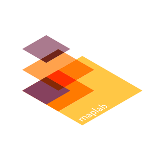

maplab
Im
landscape modus
sieht's einfach
besser aus

m
a
p
l
a
b
.
Creating Cartographic Innovation
we
are exploring data.
tell stories with maps.
discover.
visualize.
add design to cartography.
maps navigate us through our times of change.
maps open new perspectives.
every kind of maps.
it's all about collaboration.
in simple words:
we love maps. we love people. − „Times they are a changing".